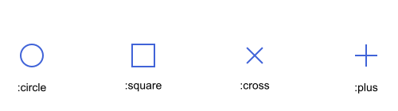
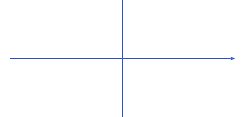
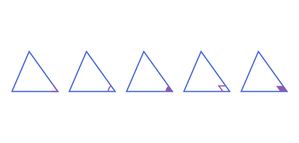
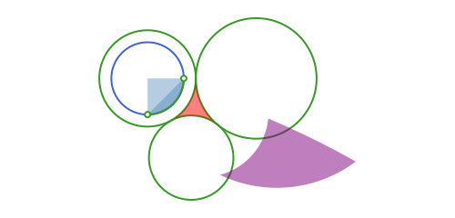
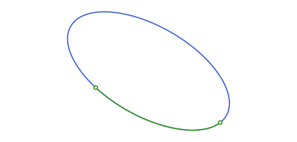
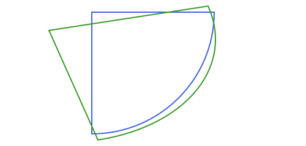
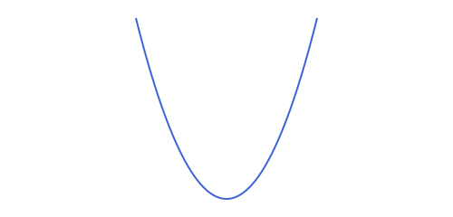

Drawing: What Each Type Builds
path(obj; action=:path, kwargs...) dispatches on the type of obj. Besides action, every method also accepts whatever structural (not styling) keywords that curve needs: how far to extend an infinite line, how finely to sample a curve Luxor has no native primitive for, and so on:
| Type | Adds to the path as | Type-specific keywords |
|---|---|---|
APPoint | a small mark: a circle by default, or a square, an x or a + | radius=3; as=:circle (also :square, :cross, :plus; the last two are two strokes, so they only show with action=:stroke) |
APSegment | a straight line between its two points, or (pass as=:arrow or as=:doublearrow) an arrow (see Arrows below) | as=:plain (default) |
APLine | a long finite segment, since the line itself is infinite; extend=0.0 draws the exact finite segment between l.p1/l.p2 instead | extend=1000.0: how far past each defining point, or a 2-tuple (past_p1, past_p2) to extend each end by a different amount; as=:plain/:arrow/:doublearrow ; add=(before, after): lengthen by fractions of distance(l.p1, l.p2) instead of absolute units (see extend_line), replacing extend |
APRay | likewise, extended only past through (not past origin); extend=0.0 draws the exact finite segment from origin to through | extend=1000.0; as=:plain/:arrow/:doublearrow; add=(before, after): lengthen the segment origin-through by fractions of its length, replacing extend |
APCircle2 | Luxor's native circle | (none) |
any APPolygon | every side, chained end to end into one closed path: a straight line for an APSegment side, a true arc for an APCircularArc2 side, an n-point sampled polyline for any other conic-arc side (see below); covers APTriangle, APQuadrilateral, APStraightNgon, APCircularSector2, APCircularSegment2, APAnnularSector2, APInterstice2, APCurvilinearTriangle2, APCurvilinearQuadrilateral2 and APCurvilinearNgon2, one method for the whole family | n=60 (only matters if some side needs sampling) |
APBoundingBox | an axis-aligned box | (none) |
APEllipse2 | a smooth, Bézier-curve ellipse (Luxor's own axis-aligned ellipse(center, w, h), w = 2a, h = 2b) inside a rotated/translated frame matching e.center/e.angle, so the path stays a true curve at any zoom level | (none) |
APParabola2 | Luxor has no native parabola primitive: sampled at n points via point_on over the parameter range srange, added as an open polyline | srange=(-100.0, 100.0), n=60 |
APHyperbola2 | likewise (no native primitive), sampled via point_on on one branch at a time | trange=(-2.0, 2.0), n=60, branch=1 (pass branch=-1 and call again for the other branch) |
APParametricCurve2 | likewise no native primitive for an arbitrary curve, sampled via point_on over curve.trange, added as an open polyline | n=60 |
APCircularArc2 | a true circular arc from p1 to p2, via Luxor's own arc2r (Cairo's native arc primitive, not a polygonal approximation) | (none) |
APEllipticArc2, APParabolicArc2, APHyperbolicArc2 | none of these has a native Cairo primitive either, so each is sampled at n points via point_on over its own parameter range [0, 1] (arc.p1 to arc.p2), added as an open polyline | n=60 |
APAngle2 | see below; it has no single canonical path | as=:rays (default; also :region), radius, bound=1000.0 (for :region with a filling action) |
APVector | has no position of its own, so it's drawn as the segment from -> from + v | from=APPoint(0.0, 0.0), as=:plain/:arrow/:doublearrow |
APHalfPlane2 | unbounded: for action in :path/:stroke/:strokepreserve, draws its boundary line only (see APLine above); for a filling action, fills the part inside a square of half-side bound instead | extend=1000.0, add, bound=1000.0 |
APStrip2 | likewise unbounded: both boundary lines, one call each, or the same box-filled region for a filling action | extend=1000.0, add, bound=1000.0 |
APUnboundedPolygon2 | likewise: its actual boundary (two rays and the segments between them), or the same box-filled region for a filling action | extend=1000.0, bound=1000.0 |
APEquipollentVector | the segment from its point of application to its tip | as=:plain/:arrow/:doublearrow |
APPolyline2 | an open chain of straight sides through its vertices, never closed | (none) |
APCurvilinearPolyline2 | an open chain of straight and curved sides in the order given: a line for an APSegment, a true arc for an APCircularArc2, a sampled polyline for any other conic arc | n=60 |
AbstractVector{<:APObject} | each element in turn, with the same kwargs every time (see below) | whatever that element's own type takes |
The four point shapes, drawn with action=:stroke:

Every method for a curve also takes reverse=true (see Reversing a path). The last row is what lets a plain Vector (what intersection/ tangent_points return, since they can give 0, 1 or 2 points depending on the geometry) get drawn directly, without unwrapping it by hand first:
pts = intersection(l, c) # a Vector{APPoint}, however many points there are
path(pts; action=:fill) # each point drawn as its own small circleIt also calls Luxor.newsubpath() before each element, so this is the safe way to batch several shapes into one combined path with the default action=:path, e.g. to fill them one color and outline them another with a single fillpreserve()/strokepath() pair, rather than drawing each one twice:
path(pts; action=:path) # builds all the circles into one path
sethue("white"); fillpreserve()
sethue("blue"); strokepath()Without the newsubpath(), Cairo's own circle/arc primitives connect to wherever the current path left off with a straight line the moment a second one starts, a well-known Cairo gotcha, not something specific to this package, but one path(::AbstractVector) takes care of for you.
Broadcasting (path.(pts; action=:path), with the dot) calls the scalar path method on each point directly; it never reaches path(::AbstractVector) at all, so none of the newsubpath() handling above applies. For an immediately-rendering action (:stroke, :fill, :fillstroke) the two look identical, since each element renders and clears on its own regardless of how it got there. The preserve actions are the exception in the other direction: with the dot, every element starts a new path, so only the last one is kept. But for the default action=:path, only the no-dot form path(pts) batches safely; path.(pts) (or a hand-written loop without its own newsubpath() calls) reproduces the stray-line bug this method exists to avoid.
Most types default effectively to an outline when you pass action=:stroke (APPoint would need action=:fill to actually show up, since an unfilled single-pixel-radius circle is invisible, but that choice is now yours to make, same as with any other type).
The single path(pg::APPolygon) method is the direct payoff of building a real APPolygon hierarchy: it walks sides(pg) via the same _polygon_walk area/perimeter already use, so one method (not seven, one per concrete type) covers every straight-sided and curved-region shape in the package. The one behavior difference from a hand-rolled per-vertex path: it always produces a closed path (no close=false open-polyline option), since a walked side sequence is inherently a loop.
A subtlety worth knowing, inherited from Luxor itself rather than anything this package adds: with a non-:path action, most of Luxor's own shape-building functions (circle, poly, and so the types built on them here: APCircle2, every APPolygon, APEllipse2) clear the current path first, so calling one always draws only that shape. A few of Luxor's own primitives don't: line (hence APSegment/APLine/APRay here) and box (hence APBoundingBox) add to whatever path is already there instead. In practice this rarely matters: a prior call with a real action (:stroke, :fill, ...) already emptied the path as a side effect of drawing it, regardless of which behavior the next call has. It only shows up if you deliberately chain several path(...; action=:path) calls to build one compound shape across multiple types and finish with a single action on the last call; in that case, a final APSegment/APLine/APRay/APBoundingBox call correctly includes everything built so far, while a final APCircle2/APPolygon/etc. call would silently discard it first.
Arrows
APSegment/APLine/APRay (and vectors) take as=:arrow to draw as an arrow instead of a plain line, via Luxor's own arrow:
path(APSegment(APPoint(-80.0, 0.0), APPoint(80.0, 0.0)); as=:arrow)
l = APLine(APPoint(0.0, -60.0), APPoint(0.0, 60.0))
path(l; extend=0.0, as=:arrow, arrowheadlength=15) # extend=0.0: the exact finite segment
See script
using Apollonius, Luxor
import Luxor: julia_red, julia_blue, julia_green, julia_purple
lxm = @prepare_to_picture! width=500 height=240 margin=20 begin
s = APSegment(APPoint(-80.0, 0.0), APPoint(80.0, 0.0))
l = APLine(APPoint(0.0, -60.0), APPoint(0.0, 60.0))
d = translate(s, APVector(0.0, 40.0))
end
begin
Drawing(lxm.width, lxm.height, :svg)
origin()
sethue(julia_blue)
path(s, as=:arrow)
path(l, extend=0.0, as=:arrow, arrowheadlength=15)
path(d, as=:doublearrow)
finish()
preview()
endThis is the one case where path doesn't just add to the current path: Luxor's arrow always strokes the shaft and fills the arrowhead immediately, with no deferred form, so action is ignored when as=:arrow. Keyword arguments other than as/extend (arrowheadlength, arrowheadangle, linewidth, ...) are forwarded straight to Luxor.arrow.
as=:arrow puts the head at the end of the shaft, as=:doublearrow puts one at each end, and the keywords startarrow and finisharrow choose each head on their own. reverse=true flips the direction, as in every path method:
s = APSegment(APPoint(-80.0, 0.0), APPoint(80.0, 0.0))
path(s; as=:doublearrow)
path(s; as=:arrow, startarrow=true, finisharrow=false)The shaft is always straight. For an arrowhead in the middle of a line, or at the end of an arc, build it with arrow_head and draw it like any other shape; see Marks, Labels & Decorations.
APAngle2: geometry, not decoration
An APAngle2 is genuinely just the space between two rays: as=:rays draws the literal two half-lines (a -> vertex -> b, extended radius units from the vertex); as=:region draws or fills the actual infinite wedge (see Drawing: Clipping, Dimensions & Reversing's "Filling an unbounded region"). Neither is a decoration: for the conventional small arc, filled pie-wedge, or right-angle corner marker, see marks(ang::APAngle2) in Marks, Labels & Decorations instead, which builds those the same way marks builds every other equality mark in a construction figure:
ang = APAngle2(t[2], t[1], t[3]) # the angle at vertex t[2]
path(ang; as=:rays, action=:stroke) # the literal two half-lines, a-vertex-b
path(ang; as=:region, action=:fill) # the actual infinite wedge
arc = only(marks(ang)) # the conventional small arc
path(arc; action=:stroke)
path(APCircularSector2(arc); action=:fill) # ...wrapped, for a filled pie-wedge
poly = only(marks(ang; style=:parallelogram)) # the right-angle-style corner marker
path(poly; action=:stroke)
path(APQuadrilateral(ang.vertex, poly.vertices...); action=:fill) # ...wrapped, for a filled version
See script
using Apollonius, Luxor
import Apollonius: translate
import Luxor: julia_red, julia_blue, julia_green, julia_purple
lxm = @prepare_to_picture! flip=false width=500 height=240 margin=20 begin
t = APTriangle(APPoint(-80.0, 60.0), APPoint(80.0, 60.0), APPoint(-20.0, -80.0))
ang = APAngle2(t[2], t[1], t[3])
tv = translate.(t, APVector.([0, 200, 400, 600, 800], 0))
angv = translate.(ang, APVector.([0, 200, 400, 600, 800], 0))
end
begin
Drawing(lxm.width, lxm.height, :svg)
origin()
sethue(julia_blue)
path(tv, action=:stroke)
sethue(julia_purple)
path(angv[1]; as=:rays, action=:stroke)
path(angv[2]; as=:region, action=:fill)
path(only(marks(angv[3])); action=:stroke)
path(APCircularSector2(only(marks(angv[4]))); action=:fill)
path(only(marks(angv[5]; style=:parallelogram)); action=:stroke)
finish()
preview()
endradius (for :rays) and marks's own size both default to 0.15 times the shorter of the distances from the vertex to ang.a and ang.b, so a marker looks reasonable at the figure's own scale without having to think about it; pass it explicitly to override.
Arcs and curvilinear regions
APCircularArc2, APCircularSector2, APCircularSegment2, APAnnularSector2 and APInterstice2 (see Circles: Arcs, Tangency & Apollonius Problems) draw exactly like everything else, all through the same generic path(pg::APPolygon) method described above:
circ = APCircle2(APPoint(0.0, 0.0), 30.0)
arc = APCircularArc2(circ, APPoint(30.0, 0.0), APPoint(0.0, 30.0))
path(arc; action=:stroke)
sethue("steelblue"); setopacity(0.4)
path(APCircularSector2(arc); action=:fill) # the pie slice
path(APCircularSegment2(arc); action=:fill) # the cap cut off by the chord
c1 = APCircle2(APPoint(0.0, 0.0), 40.0)
c2 = APCircle2(APPoint(90.0, 0.0), 50.0) # tangent to c1: distance 90 == 40 + 50
c3_center = intersection(APCircle2(c1.center, c1.r + 35.0), APCircle2(c2.center, c2.r + 35.0))[1]
c3 = APCircle2(c3_center, 35.0) # tangent to both c1 and c2
sethue("red"); setopacity(0.5)
path(interstices(c1, c2, c3); action=:fill)
sethue("purple")
path(invert(APTriangle(APPoint(50.0, 20.0), APPoint(90.0, 30.0), APPoint(60.0, 80.0)), APPoint(0.0, 0.0), k=100.0); action=:fill)
Every curved side here is built from Luxor's own arc2r/carc2r (Cairo's native circular-arc path primitive, driven by a center and the two endpoints), never a sampled polyline standing in for the arc, the way APParabola2/APHyperbola2 above have to (Luxor has no native primitive for those curves, so sampling is the only option there).
Elliptic, parabolic and hyperbolic arcs
APEllipticArc2, APParabolicArc2, APHyperbolicArc2 (see Conics: Ellipse, Parabola & Hyperbola) draw the same way as APCircularArc2, just sampled rather than a native Cairo primitive (like APParabola2/APHyperbola2 themselves):
e = APEllipse2(APPoint(0.0, 0.0), 40.0, 20.0, pi / 6)
earc = APEllipticArc2(e, point_on(e, 0.2), point_on(e, 2.0))
path(earc; action=:stroke)
They can also turn up as a side of a curvilinear region, not from building one directly (there's no APEllipticSector2), but as the result of an APAffineMap applied to a circular-arc region, since a non-conformal map turns a circular arc elliptic:
sec = APCircularSector2(APCircularArc2(APCircle2(APPoint(0.0, 0.0), 30.0), APPoint(30.0, 0.0), APPoint(0.0, 30.0)))
skew = APAffineMap(1.3, 0.4, -0.2, 0.9, 0.0, 0.0)
path(skew(sec); action=:stroke) # an APCurvilinearTriangle2 with one elliptic-arc side
path(::APPolygon) handles this transparently: a side is drawn with arc2r if it's an APCircularArc2, or sampled at n points (the same n path itself takes) if it's any of the other three arc types.
Parametric curves
APParametricCurve2 (see Points, Lines & Rays: Special Points & Curves) draws the same way as APParabola2/APHyperbola2: Luxor has no native primitive for an arbitrary curve either, so it's sampled at n points via point_on over curve.trange, added as an open polyline.
curve = APParametricCurve2(t -> APPoint(t, t^2), (-2.0, 2.0))
path(curve; action=:stroke)